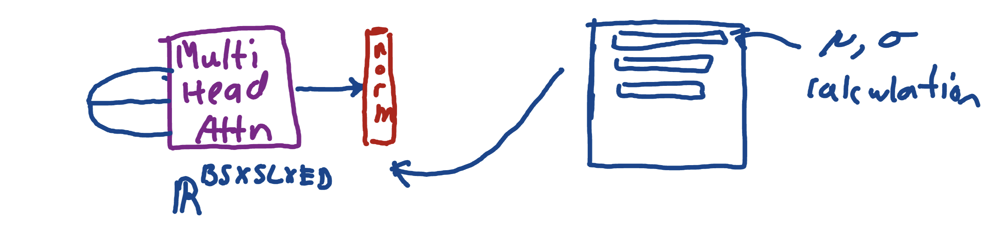
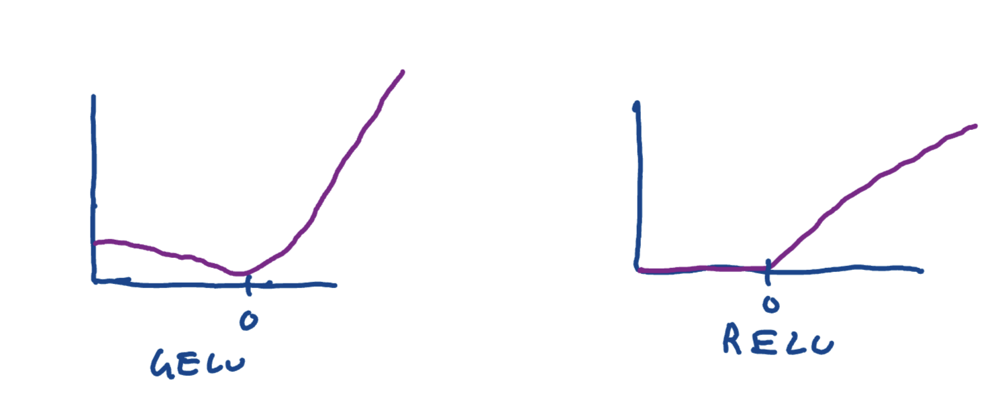
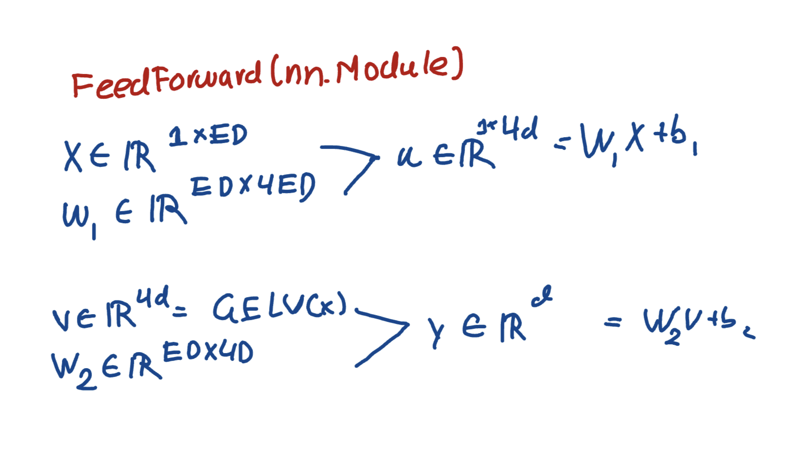

Although we talked about normalization a little bit yesterday, I said it 'smooths the training process', and I also provided some of the mathematics used.
There are a couple reasons why it 'smooths' the training process. After data is passed through an nn module like Linear, or after passing through attentoin heads, vectors are scaled up and down according to their significance. However, this is done in an unstandardized way. Some vectors may become extremely scaled in whatever direction, leading to outliers and throwing off the training. So, normalization layers makes all values in the range of 0 to 1. In this respect, it 'smooths' out the training. Another part of the normalization phase is that it applies learnable 'scale and shift' parameters. When you squash vectors down to such a small range, sometimes the significance of some of the variables is lost. Using these Paremeter moduels, we are able to scale and shift some of these significant values back up so that they retain their importance, but still lie in a reasonable range to stop outlier messing with the data. Even if the idea is not totally understood , for practical reasons -- lets put a black box around it. This normalizataion step comes after multi head attention and feed forward. Here's a quick pic below:

Then there is another concept I don't fully understand. In feed forward training sequences, we use a function called \(GELU\). A common associated function is \(RELU\). Both are used to extract important patterns during these feed forward training sequences, and they are located in the arguments of nueral network modules like Linear. Again, I'm starting to see something that might be important for my learning. The statement 'extracting important values', while they aren't understood to the complete, are enough to continue with the project and keep building. I should strive to understand it completely, but reaching a black box type of definition is important to just for efficiency so i don't lose the forest for the trees. Anyway, the main difference between GELU and RELU is that GELU allows to detect much more subtle patterns in data. An analogy I could give is like teaching a kid to ride a bike, and the teacher is the RELU/GELU function. Let's say he tries to make a turn, leans too far to the left, and falls off. The RELU function would say something like "stop. don't lean again, our you'll fall.". The GELU function would say "hey, leaning did help you turn, but you leaned too much and that is what made you fall. Don't eliminate leaning, just do it a little less.". Here is a photo that describes both functions:

Last thing is the feed forward step. This step usually comes after the vectors are sent through
the casual attention head and then normalized. This step is where we extract patterns, where we include
nn.Linear modules including the GELU and RELU functions. Let's first look at a formal
definition:

So we call a nn.Linear(cfg['ed'], 4*cfg['ed']). That is the
weight of shape embedding dimension and 4 times the embedding dimension.
It takes X of shape \(1 \times ED\), or a vector of width
of the embedding dimension. This is each row. It performs the famous
\(WX + b \) in order to extract the important information. Now,
it was confusing to me at first but the arbitrary number 4
is just what researchers in Attention is All You Need discovered
to be an optimal number for this process. In the second part of this process,
we basically have to revert the shape back to what it was. I'm not completely sure
if any additional learning is done in this step because the GELU function
is not applied in this. In all, these mathematics make up the FeedForward module.
And those are all the major concepts for the day. I came across an important video the other day. It was talking about how I should be doing things that are the most important to my goals. It sounds obvious but now that I think about them I haven't always chosen the things that align with my future the most. This project definitely does, because I need projects to stand out and get oppurtunities, which is a necessity. Neetcode/Leetcode definitely important , but I haven't even got a word back from a company. At the very least, let's act on the things that are most important first. being busy doesn't mean i'm spending my time well.